7210A45 R.R. FRONT PANEL (LEVEL 2)
- Path
- Procedures > 72 PANELS AND FRAME > 7210 REMOVING REFITTING > 7210A STRUCTURAL ELEMENTS (FRONT PART) > 7210A45 R.R. FRONT PANEL (LEVEL 2)
- Kind
- repair procedure (removal / refitting; the operation number is the code)
- Applies to
- all engines; all production periods
- Interactive page
- https://sloeber94.github.io/elrnDB-fUlss/en/#/179007956
Applies to: all engines; all production periods
Applies to: all engines; all production periods
 Removing
Removing
 Refitting
Refitting- Work on the component highlighted having previously made sure that the equipment illustrated below is available.
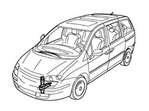
Applies to: all engines; all production periods
1. Crossmember, front section.
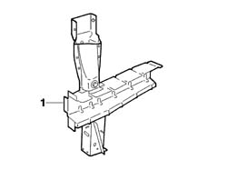
Applies to: all engines; all production periods
2. Crossmember closing device.
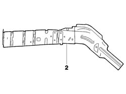
Applies to: all engines; all production periods
3. Front side member reinforcement.
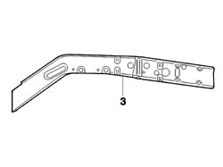
Applies to: all engines; all production periods
- Check that the components connected are not distorted by checking the bodyshell alignment measurements using suitable equipment (gauges, templates or jigs).
- Make the cuts and holes in the crossmember closing device as illustrated in the diagram using a power saw and an 8 mm diameter drill bit.
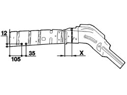
Applies to: all engines; all production periods
- Make the cuts in the front side member reinforcement as illustrated in the diagram using a power saw.
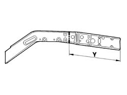
Applies to: all engines; all production periods
- Make the cuts following the measurements illustrated using a power saw.
- Reduce the spot welds illustrated using a chamfering machine.
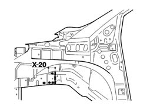
Applies to: all engines; all production periods
- Cut the element at point (A) using a power saw.
- Remove the weld spots using a chamfering machine and a drill.
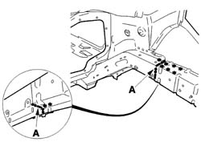
Applies to: all engines; all production periods
- Cut the element reinforcement at the point indicated using a power saw.
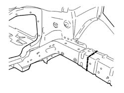
Applies to: all engines; all production periods
- Remove the residues from the bodyshell using a disc grinder and apply electro-galvanizing paint.
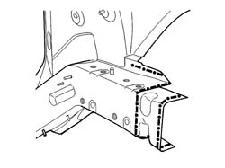
Applies to: all engines; all production periods
Refitting
Removing- Position the front section of the element and the reinforcement and fasten using self-locking clamps then, after having checked that the alignment is correct, cut the element reinforcement and remove and level the residues on the replacement part using a disc grinder and then apply electro-galvanizing paint.
- Position the front section of the element, the element reinforcement produced previously, the front section of the crossmember and the front wheel arch and fasten using self-locking clamps; then, after having checked that the alignment is correct, cut the front section of the crossmember.
- Remove the front wheel arch and the front section of the crossmember removing and levelling the residues on the replacement part and then applying electro-galvanizing paint.
- Position the element reinforcement and MIG weld as indicated in the diagram then grind the welds using a disc grinder.
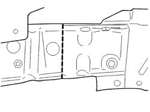
Applies to: all engines; all production periods
- Position the element and MIG weld as indicated in the diagram then grind the welds using a disc grinder.
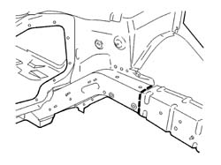
Applies to: all engines; all production periods
- Weld the top part of the element as illustrated in the diagram using a spot welder.
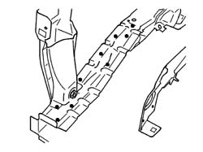
Applies to: all engines; all production periods
- Weld the bottom part of the element and the front section of the crossmember as illustrated in the diagram using a spot welder.
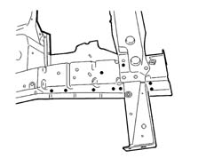
Applies to: all engines; all production periods
- Weld the bottom part of the element and the front section of the crossmember and the front wheel arch as illustrated in the diagram using a spot welder.
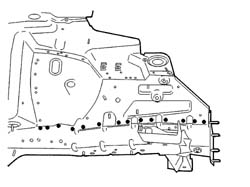
Applies to: all engines; all production periods
- Continue with the MIG welding (B) and then using a spot welder as illustrated in the diagram then grind the welds using a disc grinder.
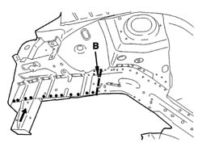
Applies to: all engines; all production periods
- Grind the welds using a disc grinder.
- Check that the welded component is correctly positioned.
- Apply electro-galvanizing paint to the ground parts.
- Proceed with waxing the box sections.